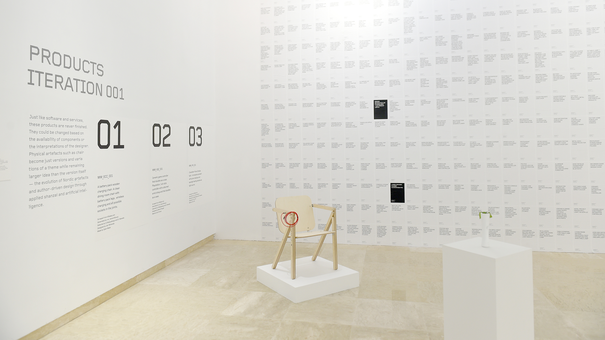

2018
Made in Machina/e
Machine-generated and human-designed products.

Made in Machina/e is a real/fictional product company — a design studio run partly by machines and partly by humans, whose output is a series of objects that could only exist in the overlap.
The project contrasts two design cultures that rarely meet: Nordic design, which prioritises authorship and considered social purpose, and Shanzhai design, which leverages whatever components are available to produce fast, unexpected combinations. MiM tries to synthesise them algorithmically. Components were scraped from Alibaba, fed into a neural network trained on Nordic product imagery, and the results handed to human curators who selected the most interesting collisions for designers to develop into real objects.
Three products emerged from the first iteration: a battery-powered wooden charging chair, a ceramic game controller vase, and a chandelier made from phone screens. Each exists somewhere between furniture, prop, and glitch.
The project raises questions about authorship, cultural appropriation in machine learning, and what design means when the designer doesn't fully understand their own process. Exhibited at the He Xiangning Art Museum in Shenzhen, 2018. Collaboration with Sami Niemela; product design by Jari Miranda, Benoit Rouger, and Chiu Chih.